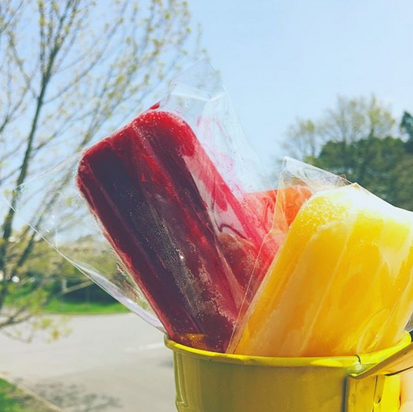
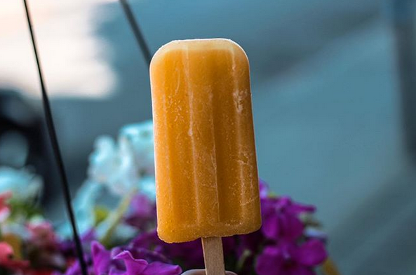
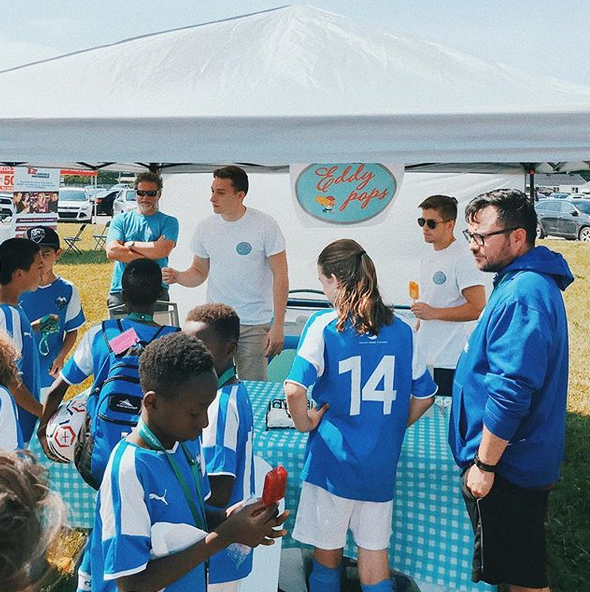
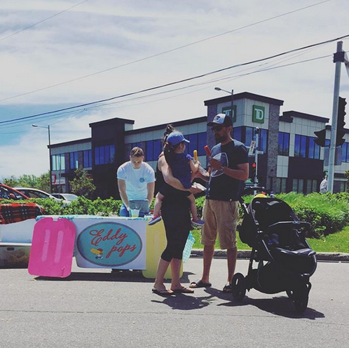
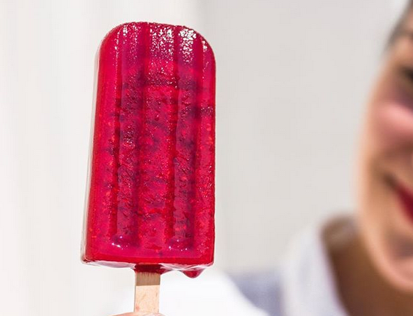
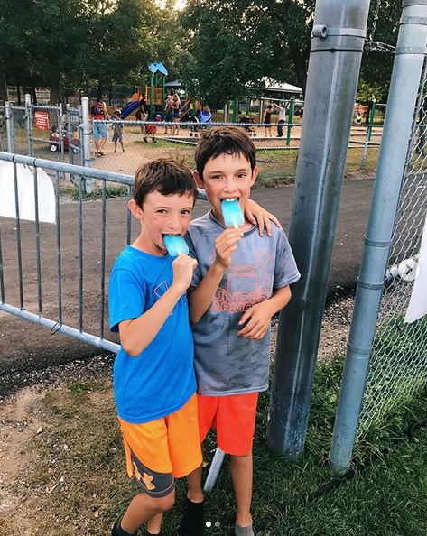

Qu'est-ce qu'Eddy Pops?
Juin 2019
Eddy Pops est une petite entreprise aux larges ambitions. Son but est de préparer et distribuer des pops de grande qualité. Fait avec de vrais fruits, cette collation rafraîchissante a fait ses preuves lors de plusieurs évènements sportifs. Cette entreprise à vu le jour à la suite du succès d'Edouard Doyon lors de son passage à l'école d'Entrepreneurship de Beauce. Depuis ce jour, lui et sa famille travail très fort pour satisfaire ça clientèle.
Où me trouver?
20 Juin - Carrefour Charlesbourg - 12h à 16h
25 Juin - Terrain de football limoilou - 10h à 15h30
Gallerie





